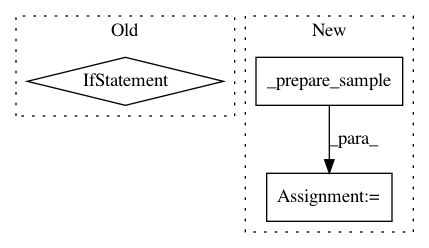

1082ba352c5f1d524b1fcba43ee611280b169224,fairseq/trainer.py,Trainer,valid_step,#Trainer#Any#,310
Before Change
agg_logging_output = self.criterion.__class__.aggregate_logging_outputs(logging_outputs)
// update loss meters for validation
if "loss" in agg_logging_output:
self.meters["valid_loss"].update(agg_logging_output["loss"], grad_denom)
// criterions can optionally log the NLL loss too
if "nll_loss" in agg_logging_output:
self.meters["valid_nll_loss"].update(agg_logging_output["nll_loss"], ntokens)
return agg_logging_output
After Change
with torch.no_grad():
sample = self._prepare_sample(sample)
if sample is None:
sample = self._prepare_sample(self._dummy_batch)
_loss, sample_size, logging_output = self.task.get_loss(
self.model, self.criterion, sample,
)
// gather logging outputs from all replicas
if self.args.distributed_world_size > 1:
logging_output, sample_size = zip(*distributed_utils.all_gather_list(
In pattern: SUPERPATTERN
Frequency: 3
Non-data size: 3
Instances
Project Name: pytorch/fairseq
Commit Name: 1082ba352c5f1d524b1fcba43ee611280b169224
Time: 2018-09-25
Author: edunov@apache.org
File Name: fairseq/trainer.py
Class Name: Trainer
Method Name: valid_step
Project Name: pytorch/fairseq
Commit Name: 65d88f150c54f9549de0b565411684b52f4e2b50
Time: 2020-12-01
Author: axiao@fb.com
File Name: fairseq/trainer.py
Class Name: Trainer
Method Name: train_step